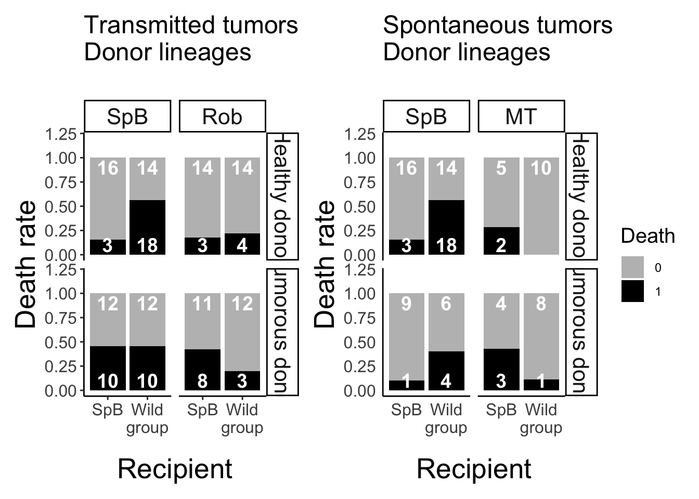

Analysis of the mortality after grafting
Transmissible tumors dataset
Random effects selection (according to Zuur et al. 2009)
mr1 <- glmmTMB(data=donor_trans, Death ~ donor * donor_status + receiver + (1|lot) + (1|date_draft), family = binomial, REML = T)
mr2 <- glmmTMB(data=donor_trans, Death ~ donor * donor_status + receiver + (1|date_draft/lot), family = binomial, REML = T)
mr3 <- glmmTMB(data=donor_trans, Death ~ donor * donor_status + receiver + (1|lot), family = binomial, REML = T)
mr4 <- glmmTMB(data=donor_trans, Death ~ donor * donor_status + receiver + (1|date_draft), family = binomial, REML = T)
mr5 <- glmmTMB(data=donor_trans, Death ~ donor * donor_status + receiver, family = binomial, REML = T)
AICc(mr1, mr2, mr3, mr4, mr5) ## df AICc
## mr1 7 216.6192
## mr2 7 216.6192
## mr3 6 218.7957
## mr4 6 214.4363
## mr5 5 218.2406There is no need to include any of the potential random effects that have been measured.
Fixed effects selection
m1 <- glmmTMB(data=donor_trans, Death ~ donor * donor_status * receiver+ (1|date_draft), family = binomial, REML = F)
m2 <- glmmTMB(data=donor_trans, Death ~ donor * donor_status + receiver+ (1|date_draft), family = binomial, REML = F)
m3 <- glmmTMB(data=donor_trans, Death ~ donor + donor_status * receiver+ (1|date_draft), family = binomial, REML = F)
m4 <- glmmTMB(data=donor_trans, Death ~ donor * receiver + donor_status+ (1|date_draft), family = binomial, REML = F)
m5 <- glmmTMB(data=donor_trans, Death ~ donor + donor_status + receiver+ (1|date_draft), family = binomial, REML = F)
m6 <- glmmTMB(data=donor_trans, Death ~ donor + donor_status+ (1|date_draft), family = binomial, REML = F)
m7 <- glmmTMB(data=donor_trans, Death ~ donor + receiver+ (1|date_draft), family = binomial, REML = F)
m8 <- glmmTMB(data=donor_trans, Death ~ donor_status + receiver+ (1|date_draft), family = binomial, REML = F)
m9 <- glmmTMB(data=donor_trans, Death ~ donor * donor_status+ (1|date_draft), family = binomial, REML = F)
m10 <- glmmTMB(data=donor_trans, Death ~ donor * receiver+ (1|date_draft), family = binomial, REML = F)
m11 <- glmmTMB(data=donor_trans, Death ~ donor_status * receiver+ (1|date_draft), family = binomial, REML = F)
m12 <- glmmTMB(data=donor_trans, Death ~ donor+ (1|date_draft), family = binomial, REML = F)
m13 <- glmmTMB(data=donor_trans, Death ~ donor_status+ (1|date_draft), family = binomial, REML = F)
m14 <- glmmTMB(data=donor_trans, Death ~ receiver+ (1|date_draft), family = binomial, REML = F)
m15 <- glmmTMB(data=donor_trans, Death ~ 1+ (1|date_draft), family = binomial, REML = F)
AICc(m1, m2, m3, m4, m5, m6, m7, m8, m9, m10, m11, m12, m13, m14, m15)## df AICc
## m1 9 210.4327
## m2 6 214.1003
## m3 6 208.0035
## m4 6 210.3432
## m5 5 212.4761
## m6 4 211.9316
## m7 4 211.5997
## m8 4 215.5363
## m9 5 213.4983
## m10 5 209.6024
## m11 5 210.9490
## m12 3 210.8021
## m13 3 215.4346
## m14 3 214.5699
## m15 2 214.1961Table of the results of the best fitted models (lower AICc+2)
| Death | Death | |||||
|---|---|---|---|---|---|---|
| Predictors | Odds Ratios | CI | p | Odds Ratios | CI | p |
| donor [Rob] | 0.43 | 0.20 – 0.91 | 0.027 | 0.95 | 0.34 – 2.64 | 0.915 |
| donor status [T] | 4.42 | 1.40 – 13.91 | 0.011 | |||
| receiver [TV] | 4.38 | 1.41 – 13.61 | 0.011 | 2.69 | 1.06 – 6.83 | 0.037 |
|
donor status [T] × receiver [TV] |
0.15 | 0.03 – 0.66 | 0.013 | |||
|
donor [Rob] × receiver [TV] |
0.22 | 0.05 – 0.97 | 0.046 | |||
| ICC | 0.14 | 0.14 | ||||
| N | 16 date_draft | 16 date_draft | ||||
| Observations | 164 | 164 | ||||
m10 <- glmmTMB(data=donor_trans, Death ~ donor * receiver+ (1|date_draft), family = binomial, REML = T)
tab_model(m10, show.intercept = F, show.r2 = F, show.re.var = F)| Death | |||
|---|---|---|---|
| Predictors | Odds Ratios | CI | p |
| donor [Rob] | 0.94 | 0.34 – 2.59 | 0.911 |
| receiver [TV] | 2.60 | 1.04 – 6.50 | 0.040 |
|
donor [Rob] × receiver [TV] |
0.23 | 0.05 – 1.00 | 0.050 |
| ICC | 0.16 | ||
| N date_draft | 16 | ||
| Observations | 164 | ||
The results are quite unclear, the best fitted models are a bit
incoherent so it might just indicate a lack of power for analysis.
Spontaneaous tumors dataset
Random effects selection
m1 <- glmmTMB(data=donor_spont, Death ~ donor + receiver + donor_status + (1|lot) + (1|date_draft), family = binomial, REML = T)
m2 <- glmmTMB(data=donor_spont, Death ~ donor + donor_status + receiver + (1|date_draft/lot), family = binomial, REML = T)
m3 <- glmmTMB(data=donor_spont, Death ~ donor + donor_status + receiver + (1|lot), family = binomial, REML = T)
m4 <- glmmTMB(data=donor_spont, Death ~ donor + donor_status + receiver + (1|date_draft), family = binomial, REML = T)
m5 <- glmmTMB(data=donor_spont, Death ~ donor + donor_status + receiver, family = binomial, REML = T)
AICc(m1, m2, m3, m4, m5) ## df AICc
## m1 6 133.7708
## m2 6 133.7708
## m3 5 131.5171
## m4 5 131.5171
## m5 4 129.3089
There is no need to include any of the potential random effects that
have been measured.
Fixed effects selection
m1 <- glmmTMB(data=donor_spont, Death ~ donor * donor_status * receiver, family = binomial, REML = F)
m2 <- glmmTMB(data=donor_spont, Death ~ donor * donor_status + receiver, family = binomial, REML = F)
m3 <- glmmTMB(data=donor_spont, Death ~ donor * receiver + donor_status, family = binomial, REML = F)
m4 <- glmmTMB(data=donor_spont, Death ~ donor + receiver * donor_status, family = binomial, REML = F)
m5 <- glmmTMB(data=donor_spont, Death ~ donor + donor_status + receiver, family = binomial, REML = F)
m6 <- glmmTMB(data=donor_spont, Death ~ donor + donor_status, family = binomial, REML = F)
m7 <- glmmTMB(data=donor_spont, Death ~ donor + receiver, family = binomial, REML = F)
m8 <- glmmTMB(data=donor_spont, Death ~ donor_status + receiver, family = binomial, REML = F)
m9 <- glmmTMB(data=donor_spont, Death ~ donor * donor_status, family = binomial, REML = F)
m10 <- glmmTMB(data=donor_spont, Death ~ donor * receiver, family = binomial, REML = F)
m11 <- glmmTMB(data=donor_spont, Death ~ donor_status * receiver, family = binomial, REML = F)
m12 <- glmmTMB(data=donor_spont, Death ~ donor, family = binomial, REML = F)
m13 <- glmmTMB(data=donor_spont, Death ~ donor_status, family = binomial, REML = F)
m14 <- glmmTMB(data=donor_spont, Death ~ receiver, family = binomial, REML = F)
m15 <- glmmTMB(data=donor_spont, Death ~ 1, family = binomial, REML = F)
AICc(m1, m2, m3, m4, m5, m6, m7, m8, m9, m10, m11, m12, m13, m14, m15)## df AICc
## m1 8 122.1274
## m2 5 129.4063
## m3 5 118.0007
## m4 5 130.6583
## m5 4 129.3615
## m6 3 130.4765
## m7 3 127.3710
## m8 3 130.5674
## m9 4 130.3118
## m10 4 115.8866
## m11 4 131.6759
## m12 2 128.6919
## m13 2 131.6276
## m14 2 129.0768
## m15 1 130.4255
The best model is the m10, tacking into account the donor line and the
recipient line.

| Death | |||
|---|---|---|---|
| Predictors | Odds Ratios | CI | p |
| donor [MT] | 3.47 | 0.76 – 15.87 | 0.108 |
| receiver [TV] | 6.88 | 2.04 – 23.21 | 0.002 |
|
donor [MT] × receiver [TV] |
0.01 | 0.00 – 0.19 | 0.001 |
| Observations | 104 | ||
The Mt donor induces more mortality in the TV recipient than in the SpB
recipient.
Data visualisation
